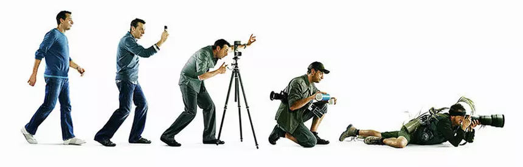
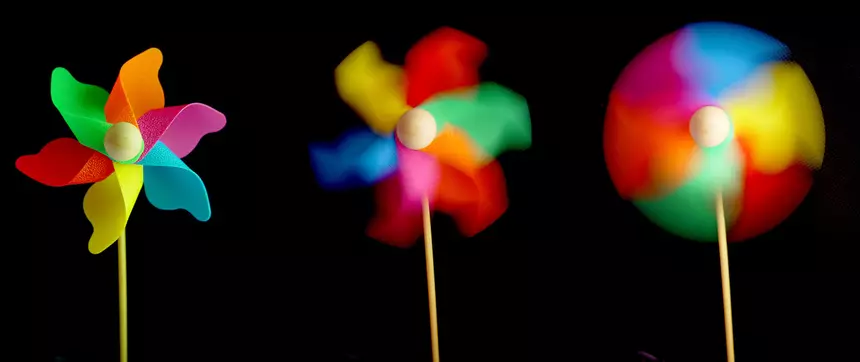
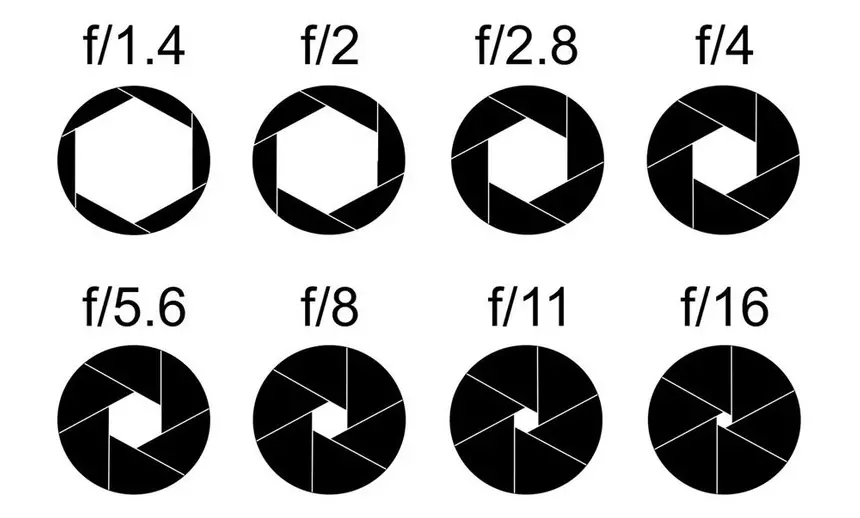
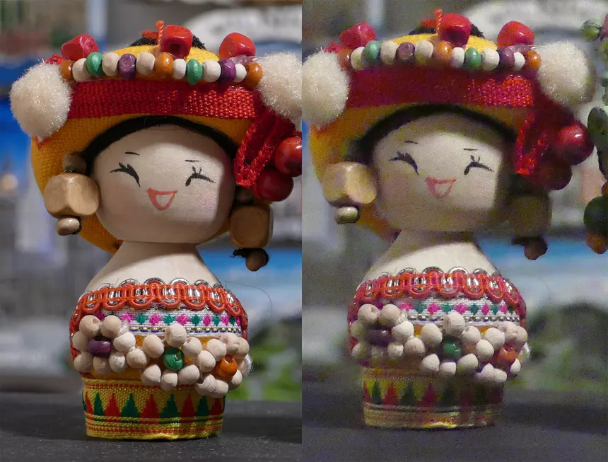

Как пользоваться фотоаппаратом?
Вы купили зеркалку и не знаете, с какой стороны к ней подойти?
Спрашиваете у Гугла что такое выдержка и диафрагма? Что такое ISO?
Пытаетесь понять, что означают буквы на селекторе режимов съемки?
Хотите в конце концов понять, как научиться фотографировать и стать фотографом?
Этот материал поможет разобраться с самыми базовыми понятиями.

1. Что такое экспозиция?
Грубо говоря, экспозиция – это количество света, которое получает матрица фотоаппарата. Или пленка, которой вы вряд ли вообще будете пользоваться. А экспонирование – это сам процесс экспозиции. А количество света зависит от времени экспонирования и уровня освещенности, который регулируется выдержкой, диафрагмой и чувствительностью матрицы. Для того, чтобы вам проще было понимать разницу в экспозиции – запомните понятие «ступень».
2. Что такое выдержка?
Выдержка в фотографии не имеет ничего общего со спокойствием и терпимостью. Это отрезок времени, в течение которого затвор открыт и свет попадает на матрицу. В большинстве случаев выдержка очень короткая и измеряется в секундах и долях секунды. На экране фотоаппарата значение 60 соответствует 1/60 доли секунды. А вообще существует стандартный ряд выдержек с шагом в одну ступень: 1, 1/2, 1/4, 1/8, 1/15, 1/30, 1/60, 1/125, 1/250, 1/500, 1/1000, 1/2000, 1/4000 с. Каждая следующая ступень уменьшает количество света, попадающего на матрицу в два раза. В четыре раза – это две ступени. В восемь раз – три ступени, и так далее.

Съемка с короткой, средней и длинной выдержкой
Съемка с короткой, средней и длинной выдержкой
Каждая камера характеризуется диапазоном выдержек. В общем случае самая короткая выдержка составляет 1/4000 секунды, а самая длинная – 30 секунд. Снимать с рук можно на достаточно коротких выдержках (порядка 1/100, 1/200 секунды и короче), а для выдержек, измеряемых секундами (или даже для 1/10 секунды) уже нужен штатив. Без штатива естественное дрожание рук, характерное для всех людей без исключений сделает кадр смазанным, нерезким. Однако не стоит думать, что короткая выдержка – это однозначно хорошо, а длинная – непременно плохо. Нет, разные значения выдержки нужны для разных целей. Все зависит от конкретных условий и жанра съемки.
3. Что такое диафрагма?
Диафрагма – это отверстие, диаметр которого можно регулировать и изменять тем самым количество света, попадающего на матрицу. Выдержка и диафрагма – основные параметры экспозиции. А вместе значения выдержки и диафрагмы вместе называют экспопарой. Для диафрагмы также существует стандартный ряд значений с шагом в одну ступень: 1.4, 2, 2.8, 4, 5,6, 8, 11, 16. Как и в случае с выдержкой, каждая ступень означает уменьшение количества света вдвое. Обозначается диафрагма дробью с маленькой f (f/
2.8) или произведением с большой F (F2.8). Оба варианта правильны.

4. Что такое ISO?
Чувствительность и ISO – одно и то же. Если все упростить, то это величина восприимчивости матрицы фотоаппарата к свету. Так же, как выдержка, и диафрагма, чувствительность описывается стандартным рядом значений с шагом в одну ступень: 100, 200, 400, 800, 1600, 3200, 6400, 12800 и так далее. Аналогично, вы можете сделать два кадра: один с выдержкой 1/200 с, диафрагмой F2.8 и ISO 200, а во втором закрыть диафрагму до значения F4, а чувствительность увеличить до 400 единиц. Экспозиция будет одинаковой.
Качество картинки на ISO 200 (слева) и ISO25600
Качество картинки на ISO 200 (слева) и ISO25600
Увеличение чувствительности происходит очень болезненно, особенно на старых камерах. Чем выше ISO, тем больше так называемого шума появляется на фотографии и тем хуже в итоге ее качество. Повышать чувствительность стоит только при съемке в темное время суток. А уровень шума на высоких значениях ISO является одной из важнейших характеристик матрицы (и фотоаппарата в целом), поэтому съемка одной и то же сцены с разной чувствительностью приводится почти в каждом обзоре.
5. Чем отличаются режимы P, A, S и M?
Почти во всех фотоаппаратах (во всех зеркальных, беззеркальных и топовых компактных) есть несколько режимов работы. Самый очевидный из них – автоматический, которым пользуется большинство людей. Он позволяет не разбираться в том, что такое выдержка, диафрагма, чувствительность, а просто снимать и в половине случаев получать приемлемый результат. Взрывной рост популярности фотографии в 90-х был спровоцирован именно массовым внедрением авторежимов. Но увы, даже самая совершенная автоматика не работает со стопроцентным результатом.

Селектор режимов съемки на типичной зеркальной или беззеркальной камере
Селектор режимов съемки на типичной зеркальной или беззеркальной камере
Самыми востребованными режимами у продвинутых и профессиональных фотографов становятся полуавтоматические режимы – A и S (или Av и Tv в камерах Canon). В режиме A (англ. A perture – отверстие, диафрагма) вы вручную устанавливаете значение диафрагмы, а оптимальную выдержку камера подбирает автоматически, опираясь на данные встроенных датчиков. Поэтому он и называется режимом приоритета диафрагмы. Режим приоритета выдержки называется S (англ. S hutter – затвор), он работает по такому же принципу. Вы вручную задаете значение выдержки, а оптимальное значение диафрагмы камера подбирает сама. Этот режим часто используется репортажными фотографами, в следующей статье я подробно расскажу почему.
С режимом М (англ. M anual – ручной) все просто – это полностью ручной режим. Значение выдержки и диафрагмы вы устанавливаете вручную. Камера же может только подсказывать вам, что с выбранными значениями кадр будет недоэкспонирован либо пересвечен (переэкспонирован).
Режим программной автоматической экспозиции как лучшая альтернатива полностью автоматическому режиму
Режим программной автоматической экспозиции как лучшая альтернатива полностью автоматическому режиму
Ну и, наконец, режим P (англ. P rogram AE – программная автоэкспозиция) – это альтернативная версия полностью автоматического режима. Оба параметра экспозиции (выдержка и диафрагма) устанавливаются автоматически. Во всех этих режимах вы самостоятельно устанавливаете ISO, в то время как в режиме Auto (полный автомат) ручное управление чувствительностью недоступно.
Статьи
- Как пользоваться фотоаппаратом?
- Что такое макро? Особенности и приёмы съёмки мелких предметов
- Пейзажная астрофотография
- Тест